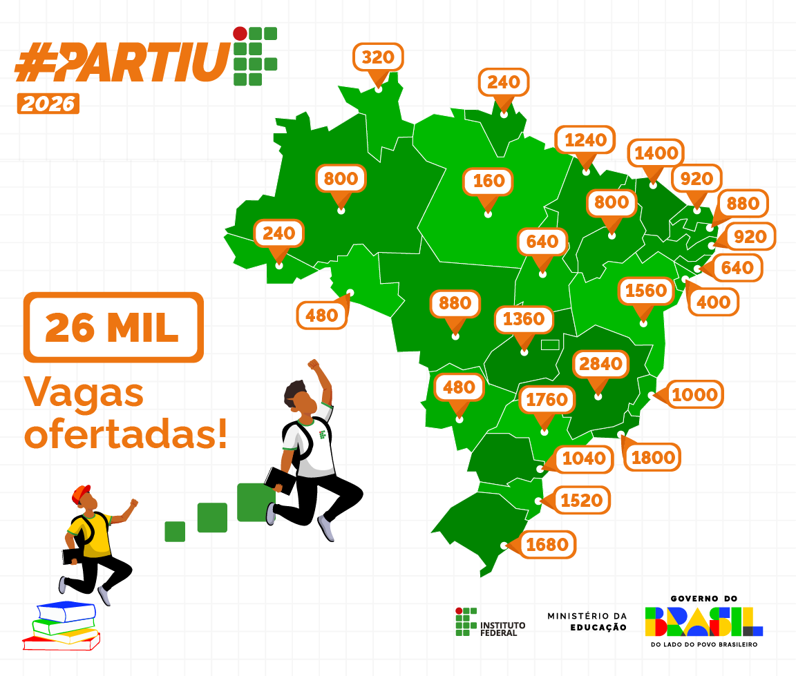

O que é o Partiu IF?
O Programa Partiu IF é um curso preparatório presencial, gratuito, que oferece aulas de reforço em Matemática, Língua Portuguesa e Ciências da Natureza, com início em abril e término em novembro de 2025. Seu objetivo é preparar estudantes do ensino fundamental de escolas públicas para o ingresso na Rede Federal de Educação Profissional, Científica e Tecnológica, da qual os Institutos Federais fazem parte. Durante os oito meses de duração do programa, os participantes também recebem uma bolsa mensal de R$ 200 como ajuda de custo.
Como participar?
Podem participar estudantes do 9º ano do Ensino Fundamental de escolas públicas, sendo ofertadas 40 vagas em cada município que possui campus do IFPR. As inscrições podem ser realizadas até o dia 21 de abril, e os candidatos serão classificados por meio de sorteio público online, previsto para o dia 23 de abril. A matrícula será efetuada com base nos documentos enviados no formulário eletrônico, nos dias 24 e 25 de abril, e o início das aulas está previsto para 28 de abril, no campus do IFPR para o qual o candidato se inscreveu e foi selecionado.
Período de Inscrições
04 a 21/04
Homologação das Inscrições
22/04
Lista de Aprovados
23/04
Realização de Matrículas
23 e 24/04
Realização de Sorteio Público
25/04
Início das Aulas
28/04
